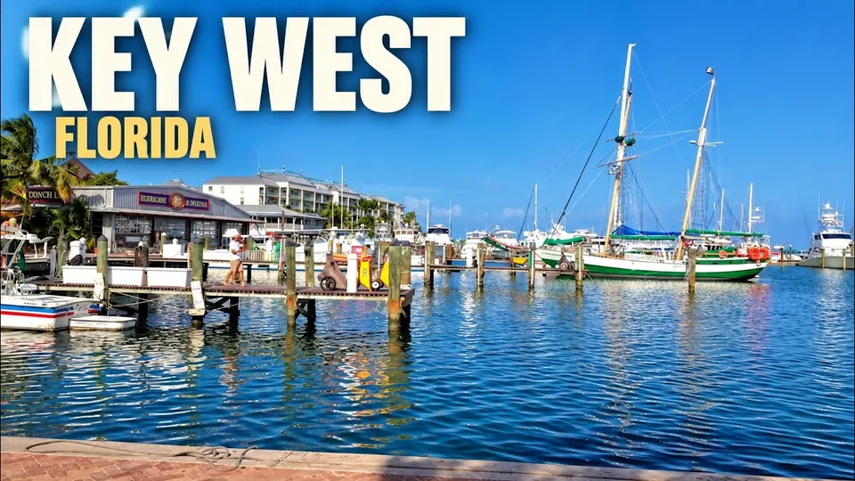

Gatlinburg
Tennessee

The places
6 films from places named in the titles. The 2024 Virginia road trip is on its own trip page.
The map marks the places that can be located from those titles; it is not a record of one continuous drive.
The map loads when you scroll to it. The stops are listed below.
Map data © OpenStreetMap
Step through the stops
Tennessee
Florida
Georgia
Georgia
Georgia
South Carolina
Mississippi
Alabama
Along the way
Gatlinburg, Tennessee, United States
Listed as: Alamo
Steakhouse
Open
Several locations in Gatlinburg.
The films